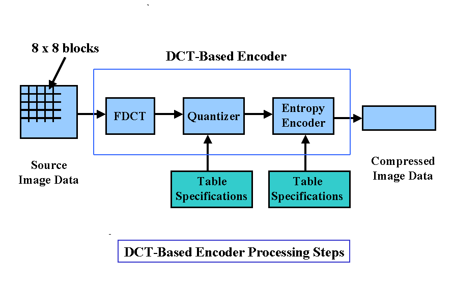

Background
Our test data, how baseline JPEG is structured, and how the hybrid_hf_compression pipeline maps onto those ideas.
Test data: 16-bit images from imagecompression.info
We standardize on 16-bit per channel RGB stills from the public corpus hosted at https://imagecompression.info. That site bundles widely used evaluation images for compression research; working in 16-bit gives more dynamic range than 8-bit JPEGs typically target, so quantization and rounding errors show up more gently in the highlights and shadows while we prototype.
Before coding, each image is loaded as unsigned 16-bit RGB, optionally converted to three channels if needed, and cropped so height and width are multiples of 8 so every 8×8 block is well-defined. File sizes and PSNR/SSIM are then measured against that same preprocessed reference so encoder and decoder agree on geometry.
Add <img src="assets/…" alt="…"> here (example: sample frame from imagecompression.info or a crop showing 16-bit dynamic range).
How a baseline JPEG compression pipeline works
JPEG (baseline / sequential DCT mode in ITU-T T.81) is the usual reference for block-transform image coding. At a high level, the encoder chain is:
- Color transform. RGB is mapped to a luma and chroma space (e.g. YCbCr). Chroma is often subsampled (4:2:0 or 4:2:2) because the eye is less sensitive to fine color detail than to brightness.
- Blocking. Each component is tiled into non-overlapping 8×8 pixel blocks.
- Forward DCT. Each block is transformed with a 2-D 8×8 discrete cosine transform so most signal energy sits in a few low-frequency coefficients.
- Quantization. DCT coefficients are divided by integers from a quantization table and rounded. This is the main lossy step: high frequencies are pushed toward zero aggressively.
- Reorder. Coefficients are read in a zig-zag order so low frequencies (and long runs of zeros after quantization) come first.
- DC coding. The DC term of each block is strongly correlated with its neighbors, so JPEG stores differences between consecutive DC values (DPCM) instead of raw DCs.
- AC coding. The remaining AC coefficients are run-length coded on zeros, then the symbols are entropy-coded (Huffman in baseline mode).
- Bitstream. Tables, image dimensions, and Huffman code definitions are packed with markers into the final
.jpgbyte stream. The decoder reverses each step: parse headers, Huffman decode, inverse RLE, reconstruct DCs from differences, dequantize, inverse DCT, upsample chroma if needed, inverse color transform.

Our project reuses the same conceptual ordering (transform, quantize, separate DC path, entropy code) but swaps in our own color front-end, tables, and file container where we experiment.
How hybrid_hf_compression works
The hybrid pipeline in codec/pipelines/hybrid_hf_compression.py is our main end-to-end codec. It is designed to mirror JPEG’s block-DCT + DC prediction + Huffman story, but it operates on PCA-decorrelated “eigen-channels” instead of YCbCr and writes a custom .uofm container. Encoder order:
- Load. Read the 16-bit RGB image and crop to a multiple of 8 (same preprocessing idea as above).
- PCA color decorrelation. Treat each pixel’s 3-vector across RGB; learn a rotation (plus means) so the first axis carries most energy. The decoder stores
Vᵀand means to invert this step after reconstruction. - Block. Split each PCA channel into 8×8 spatial blocks.
- DCT. Apply an orthonormal 2-D DCT per block and channel, the same frequency-domain role as JPEG’s DCT.
- Quantization. Use a single programmable 8×8 quantization matrix as a base. The first PCA channel uses that matrix as-is (detail-preserving). The second and third channels use the same matrix scaled by 6× so chroma-like components are quantized more coarsely, analogous to JPEG’s harsher chroma tables.
- Zig-zag and stream split. For every quantized block, zig-zag flatten; collect the DC coefficient into one stream and run-length encode only the 63 AC coefficients into a global AC tuple list.
- DPCM on DCs. Replace the raw DC sequence with first-order differences so Huffman sees a tighter histogram, matching the JPEG DC idea.
- Huffman. Build two separate Huffman bitstreams: one for DC deltas, one for AC run-length symbols. Symbol frequency tables for each stream are saved as metadata for decoding.
- Package. Save image shape, PCA parameters, Huffman counts, and both byte streams in the project container format (
save_uofm_container).
Add <img src="assets/…" alt="…"> here (example: hybrid pipeline vs JPEG, or dual Huffman stream sketch).
hybrid_hf_compression overview.Decoding loads the container, Huffman-decodes the two streams, inverts DPCM to recover DCs, merges DCs with decoded AC zig-zag data into 8×8 blocks, dequantizes with the same per-channel scaling, inverse DCT, unblock, then inverse PCA to return RGB. Metrics (PSNR, SSIM) compare the reconstructed 16-bit image to the preprocessed original on a 0 to 1 float scale.